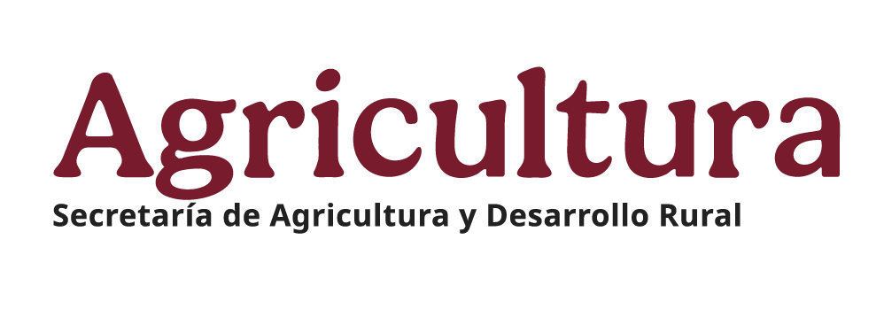

Acceso libre al catálogo
Explora nuestra formación agroecológica
Consulta libremente todos nuestros módulos e información del programa. Sin registro, sin evaluaciones, a tu propio ritmo.
Programa de Transición Agroecológica
Técnicos del Programa
Accede a tus cursos, evaluaciones y seguimiento de avance. Plataforma exclusiva para técnicos acreditados del programa.
Acceder a la plataforma
